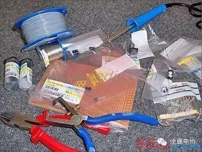
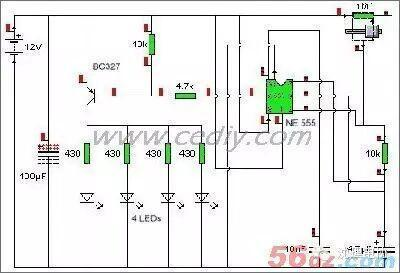
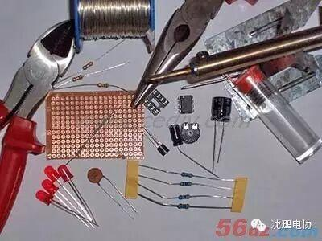
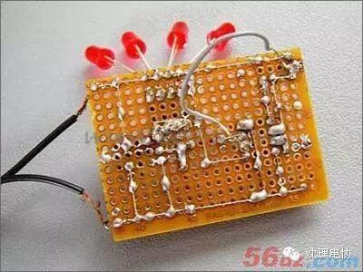
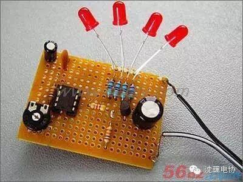

使用小程序
在千篇一律的DIY、MOD场合里，许多玩家费尽心机所改造出来的灯光效果都是静止的，如果在Lanparty上千人一面的改造MOD比比皆是，你的改造又怎么能脱颖而出呢？增加一个动感的超炫灯光效果势在必行！想像一下在姹紫嫣红的炫目光彩照耀下，观众早已疲累，静态的光影又怎么够和会动的光影效果相媲美呢？
复杂的大厦也源于简单结构，现在我们就来试试从简单的闪灯电路开始做吧。


需要的电子零件：10k电阻x2、4.7k电阻x1、 430电阻x4、 电位器1Mx1、陶瓷电容器x1、 Elko4,7fx1、 Elko100fx1、 晶体管BC327x1、NE555x1、 IC插座x1、PCB空板x1。
准备好了所需要的材料就可以开工，首先找一个工作的平面，把所有的零件按照电路图上的位置插到电路板上预先开好的孔洞上，然后就可以用导线连接元件的引脚。说是很简单的，动手就需要各位DIYer的耐心细致了。IC插座是第一个焊接到电路板的，而NE555则通过插座安装，这样能避免新手不小心因为焊接时间太长或者焊接工具没有防静电措施而烧毁集成电路。


正面的元件也要检查妥当。因为不注意细节，通电之后可能带来的不是炫目耀眼的效果而是缕缕青烟啊！

编辑/高星华